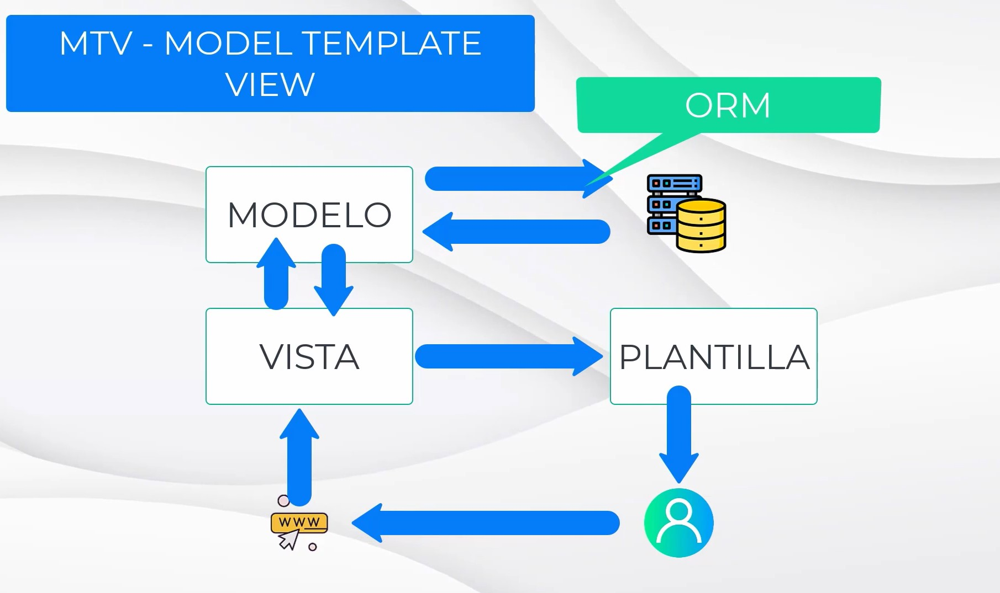
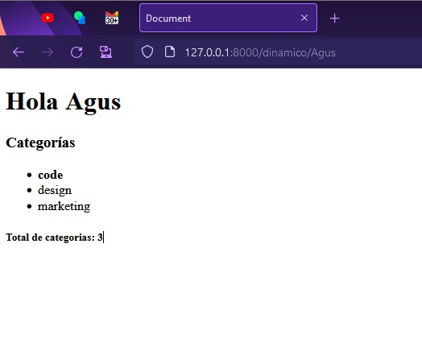
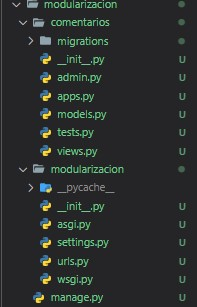
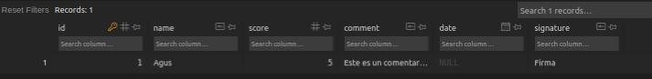
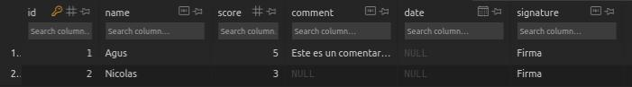

Django
1. Introducción
Presentación
Profe: Juan José Ruiz
Desarrollo web con python Django
Que vamos a aprender?
- Conceptos básicos
- Arquitectura
- Modelar datos
- Hacer consultas
- Hacer templates
- Usar el panel de administración
Que es necesario saber:
Instalación
Requerimientos de software
Comprobamos que django esta instalado
Para ello vamos a crear un proyecto de prueba para comprobar, que se ha instalado correctamente. Usando el comando:
django-admin startproject holamundo
Si django se ha ejecutado de forma correcta veremos en la carpeta que ejecutamos el comando, que se creo una carpeta con el nombre del proyecto, y una estructura interna de archivos y directorios.
Patrón de arquitectura
Django es un framework gratuito hecho en python
Un framework es un conjunto de herramientas, librerías y estructura, que nos permite trabajar de forma ágil. A la hora de trabajar en el desarrollo web no es necesario estar inventando la rueda, si no que nos ayudamos de los frameworks para reutilizar herramientas, y desarrollar ágilmente.
En el desarrollo web, hay partes que siempre se repiten, como los son:
- un tablero de control
- servicio de login y autenticación de usuarios
Todas estas acciones son comunes en el desarrollo web.
Ademas django nos facilitara una estructura de arquitectura de nuestra pagina.
Patrón MVC
 En este modelo lo que tenemos es un usuario, que realiza una petición a una url, es decir esta en el navegador y escribe la dirección de una pagina web.
Entonces lo que ocurre, es que se accede a un diccionario de urls, donde asocia cada una de estas urls a un controlador.
El controlador, es el que sabe lo que tiene que realizar.
En este modelo lo que tenemos es un usuario, que realiza una petición a una url, es decir esta en el navegador y escribe la dirección de una pagina web.
Entonces lo que ocurre, es que se accede a un diccionario de urls, donde asocia cada una de estas urls a un controlador.
El controlador, es el que sabe lo que tiene que realizar.
Por ejemplo, si uno esta accediendo a un blog, el controlador asociado a esa url, tendrá las funciones esenciales, como pueden ser, consultar los últimos posts, recabar toda la información necesaria.
El controlador llamara a los modelos. El modelo es una abstracción de los datos que tenemos en nuestra base de datos. Y el modelo puede ser tratado como una clase, pudiendo de esta manera abstraerse de la base de datos, que queda en un segundo plano, y utilizar las propiedades definidas de la clase modelo.
El modelo al final, esta conectado a la base de datos y interactúa con ella, mediante un ORM(object relational mapping).
Nosotros manipulamos los objetos del modelo, y es el orm quien se encarga de leer, escribir y trabajar con la base de datos.
En el ejemplo, nuestro modelo obtiene los datos mediante el el orm de la base de datos, y el controlador puede ver los objetos obtenidos por el modelo, y de esa forma el controlador obtiene los datos.
Una vez que el controlador obtiene los datos, lo que hace es pasar esos datos a la vista.
La vista obtiene los datos, y es la que se encarga de mostrar los datos en pantalla.
Los controladores contiene la lógica y la vista tiene las plantillas donde se despliegan los datos.
De esta arquitectura mvc es de donde deriva la arquitectura de django mtv.
Patrón de arquitectura MTV
MTV (model template view)
Los mcv son pensados en un principio para componentes más pequeños, y mtv para estructuraras de componentes o aplicaciones mas grandes. por eso django decidió renombrarlas para evitar la polémica.
En esta funciona exactamente igual, solo que a los controladores los vamos a llamar vistas y a las vistas templates/plantillas.

Estructura de archivos
En la carpeta del proyecto veremos un archivo manage.py y una carpeta que es del mismo nombre de un proyecto. Django se divide en aplicaciones, estas serán carpetas.
El archivo manage.py es muy importante, pero no es un archivo que nosotros vallamos a modificar, este se encarga de ponernos a disposición la estructura de nuestro proyecto para que podamos desde la terminal trabajar con comandos propios de django. Es el que nos va a permitir gestionar nuestro proyecto.
Es importante recordar que django nos permite gestionar nuestro proyecto de forma modular, por lo tanto podemos tener varias aplicaciones, cada aplicación se gestiona como un paquete.
Ahora de manera de ejemplo vamos a entrar a nuestra aplicación holamundo, en nuestro proyecto de prueba holamundo, dentro de ella podemos ver la estructura de archivos que nos ha generado django.

Cada una de las aplicaciones debe contener en su directorio un archivo __init__.py, para que podamos gestionar cada aplicación como un paquete.
Tenemos dentro de esta estructura dos archivos que nos van a ayudar con el servidor de pruebas y otro tipo de acciones de pruebas, que estarán asgi.py y wsgi.py.
Luego tenemos los archivos que si vamos a estar manipulando settings.py y urls.py.
urls.py
Este archivo se va encargar de asociar las direcciones url con las vistas/views.
En este archivos tenemos una lista que se llama urlpatterns, donde vamos a ir escribiendo todas las urls asociadas a las vistas con las que las vamos a ir controlando.
settings.py
En este archivo vamos a poner las configuraciones del paquete. Dentro de este archivo hay una lista llamada INSTALLED_APPS, donde tendremos las aplicaciones que vienen instaladas por defecto.
También podremos ver los templates, los midwares(aquí encontraremos aps de seguridad.)
También podremos configurar las conexiones con la base de datos y el motor controlador.
Installed_apps
django.contrib.admin
Este sirve para establecer un panel de control de administración.django.contrib.auth
Para gestionar las autenticaciones y los usuariosdjango.contrib.contenttypes
Para los diferentes tipos de contenidosdjango.contrib.sessions
Para gestionar las sesiones.django.contrib.messages
Para gestionar los mensajesdjango.contrib.staticsfiles
Para controlar la carga de archivos estáticos
Primer Hola mundo en Django
En el archivo urls.py, lo que hacemos es asociar cada una de las rutas de nuestro proyecto con una vista.
Debemos crear nuestro archivo de vistas, para controlar la ruta, y vamos a devolver un mensaje http para comprobar un circuito completo de esta arquitectura.
Lo primero que debemos hacer es entrar a la una consola, en la dirección de nuestro proyecto.
Y vamos a crear la estructura de base de datos necesaria para poder funcionar.
Para eso django lo que tiene que hacer es migrar los modelos de datos que tenemos al sistema de permanencia de datos.
Para ello se utiliza el comando migrate.
Este comando se utilizara cada vez que modifiquemos el modelo de la estructura de datos.
De manera de prueba, utilizaremos el motor SQLlite, y luego en un entorno de producción mudaremos a postgre.
Debemos recodar que el archivo manage.py, es el que debemos llamar siempre que queramos realizar una acción en nuestro proyecto. Osea que la instrucción sera a través de ese archivo.
PS C:\rep\open_boot_camp\django\prueba\holamundo>python manage.py migrate
Operations to perform:
Applying auth.0004_alter_user_username_opts... OK
Applying auth.0005_alter_user_last_login_null... OK
Applying auth.0006_require_contenttypes_0002... OK
Applying auth.0007_alter_validators_add_error_messages... OK
Applying auth.0008_alter_user_username_max_length... OK
Applying auth.0009_alter_user_last_name_max_length... OK
Applying auth.0010_alter_group_name_max_length... OK
Applying auth.0011_update_proxy_permissions... OK
Applying auth.0012_alter_user_first_name_max_length... OK
Applying sessions.0001_initial... OK
Siempre los comandos deben realizarse desde la ubicación del archivo manage.py
Al ejecutar el comando, django debería habernos creado una base de datos.
La extension para poder ver la base de datos SQLlite, SQLtools SQLlite.
Comprobar el proyecto con el servidor de pruebas
Para poder ejecutar el proyecto en el servidor de pruebas, usaremos el comando python manage.py runserver.
Al ejecutar el comando debería levantarnos un servidor, y devolver por consola este mensaje:
PS C:\rep\open_boot_camp\django\prueba\holamundo> python manage.py runserver
Performing system checks...
System check identified no issues (0 silenced).
December 20, 2022 - 12:00:01
Django version 4.0.4, using settings 'holamundo.settings'
Starting development server at http://127.0.0.1:8000/
Quit the server with CTRL-BREAK.
Al hacer click en el enlace ip del servidor, debería abrirnos una pagina en el navegador, si todo salio bien, veremos el siguiente mensaje.
Y para interrumpir la ejecución del servidor debemos apretar ctrl+C.
Ahora vamos a hacer nuestro primer Hola Mundo
Para ello vamos a necesitar un archivo de vistas views.py. Que es donde vamos a declarar las vistas con las que vamos a trabajar.
Las vistas son muy sencillas, son las que van a contener la lógica. Mediante una colección de funciones. Es decir dentro de una vista vamos a tener diferentes funciones, y van a estar relacionadas cada una con una url, en el archivos urls.py.
from django.http import HttpResponse
"""
Para definir una vista, se utiliza la definición de funciones,
en django, las vistas siempre van a tener al menos un parámetro "request", que es la petición, que recibiremos de nuestra url, la petición de ejecutar esta vista.
El request es importante, ya que si bien en este ejemplo, solo see mostrara un mensaje, el parámetro request podrá devolver información de interés. Como puede ser datos de autenticación, datos de formulario.
"""
def saludo(request):
return HttpResponse("Hola Mundo")
Una vez creada la vista debemos, asociar esa vista a una url.
En el archivo urls.py, dentro de la lista urlpatterns vamos a crear un nuevo path.
from django.contrib import admin
from django.urls import path
from . import views
urlpatterns = [
path('admin/', admin.site.urls),
path('saludo/', views.saludo, name='saludo')
]
Una vez realizados estos cambios en los archivos, podemos ejecutar nuestro live server y comprobar que en la dirección ip/saludo/ se muestra el texto indicado en la vista.
2. Rutas y plantillas
Rutas con parámetros
Las rutas con parámetros nos vana permitir, recepcionar variables a través de la url que vamos a poder utilizar en nuestra vista.
Hasta el momento todas las rutas que hemos agregado al proyecto "Hola mundo", son rutas estáticas. No están recibiendo ninguna información de la url.
En django para poder recibir variables a través de la ruta, debemos agregarlas encerradas entre <>, e indicar el tipo de variable, dos puntos seguido de su nombre de variable.
from django.contrib import admin
from django.urls import path
from . import views
urlpatterns = [
path('admin/', admin.site.urls),
path('saludo/', views.saludo, name='saludo'),
path('despedida/', views.despedida, name='despedida'),
path('adulto/<int:edad>/', views.adulto, name='adulto')
]
from django.http import HttpResponse
def saludo(request):
return HttpResponse('Hola mundo!')
def despedida(request):
return HttpResponse('Hasta luego')
def adulto(request, edad):
if edad >= 18:
return HttpResponse("Eres mayor de edad")
else:
return HttpResponse("No eres mayor de edad")
Para probar el funcionamiento de la ruta, debemos ejecutar el live server,
y darle la ruta a nuestra vista seguido de el valor de nuestra variable. En este caso podría ser ip/adulto/18, y nos llevara a una pagina que tendrá el mensaje de "Eres mayor de edad".
Esto nos sera muy util a la hora de poder, a través de una ruta a una publicación, una noticia, un producto, construyendo la ruta del objeto que deseamos consultar. Para poder empezar a vincular el contenido de forma mas interactiva.
Uso de plantillas
Vamos a crear un nuevo proyecto llamado plantillas
En el caso anterior, osea en el proyecto con el que estuvimos trabajando antes, nos salteamos el paso de MVT, de devolver un plantilla al usuario, como respuesta a un consulta, devolvíamos una respuesta Http simple.
Ahora empezaremos a trabajar para devolver una plantilla al usuario.
Esa plantilla sera una colección de archivo HTML. De esta forma lo que logramos es separar la parte visual de nuestro proyecto de la parte lógica.
La parte lógica se encontrara dentro del archivo views, y la parte visual estará en los templates.
Las plantillas nos servirán también, para estructurar nuestro proyecto, de manera que podamos evitar, el uso de código html repetido.
concepto: herencia de plantillas
Lo primero que debemos hacer es determinar, cual va ser el directorio donde vamos a poner todas nuestra plantillas(nuestros archivos html), en el archivo settings.py.
Dentro de este archivo veremos que tenemos una lista donde se guardaran los parámetros que mirara django para encontrar las plantillas.
TEMPLATES = [
{
'BACKEND': 'django.template.backends.django.DjangoTemplates',
'DIRS': ['templates'],
'APP_DIRS': True,
'OPTIONS': {
'context_processors': [
'django.template.context_processors.debug',
'django.template.context_processors.request',
'django.contrib.auth.context_processors.auth',
'django.contrib.messages.context_processors.messages',
],
},
},
]
Una ves especificado el directorio de las plantillas, vamos a crear un archivo llamado igual que la función simple, que le pondremos un <h1>"Hola mundo"</h1>.
Luego en el archivo views.py, tenemos varias posibilidades con el siguiente paso. Una de ellas es abrir un archivo, renderizarlo, y una vez utilizado cerrarlo. Sin embargo django nos va a facilitar este paso, utilizando un método de la librería shortcuts llamado render, que nos va a permitir renderizar los templates.
El método render() va a necesitar de tres parámetros para funcionar, el primero sera la request para que sea consistente, en segundo lugar la dirección del archivo html que sera la plantilla, y un tercero que sera el contexto, en este caso, no tendremos nada, ya que la plantilla que armamos es estática, osea que no necesita de variables o parámetros. Pero en un futuro utilizaremos plantillas que necesitaran parámetros y información para mostrar al usuario lo datos de su consulta.
Un contexto en django, no sera mas que un diccionario, que tendrá llaves y valores.
from django.shortcuts import render
def simple(request):
return render(request, 'simple.html', {})
<!DOCTYPE html>
<html lang="en">
<head>
<meta charset="UTF-8">
<meta http-equiv="X-UA-Compatible" content="IE=edge">
<meta name="viewport" content="width=device-width, initial-scale=1.0">
<title>Document</title>
</head>
<body>
<h1>Hola mundo</h1>
</body>
</html>
Uso de contextos
A lo largo de esta sección se vera como generar plantillas de contexto dinámico.
En este caso a la hora de dar la dirección en el archivo urls.py, también debemos dales los valores contextuales, ya que nos estamos refiriendo a una consulta a una plantilla dinámica.
from django.contrib import admin
from django.urls import path
from . import views
urlpatterns = [
path('admin/', admin.site.urls),
path('simple/', views.simple, name='simple'),
path('dinámico/<str=name>', views.dinámico, name='dinámico')
]
En el caso de la configuración de la función que describe la vista en el archivo view.py, también debemos agregar en los parámetros de la función, los valores que nos darán el comportamiento de la búsqueda que desplegara los datos sobre la plantilla.
from django.shortcuts import render
def dinámico(request, name):
context = {'name' : name}
return render(request, 'dinámico.html', context)
Para utilizar el valor de contexto en la plantilla, debemos usar dobles llaves, y escribir el nombre de la llave del diccionario, descrito en el archivo views.py.
<!DOCTYPE html>
<html lang="en">
<head>
<meta charset="UTF-8">
<meta http-equiv="X-UA-Compatible" content="IE=edge">
<meta name="viewport" content="width=device-width, initial-scale=1.0">
<title>Document</title>
</head>
<body>
<h1>Hola {{name}}</h1>
</body>
</html>

En el contexto que le pasamos a la plantilla, no solo podemos pasarle nombres de llaves, sino también le podemos pasar objetos, y sus variables y métodos asociados.
Bucles y condicionales en plantillas
En esta sección vamos a ver como recorrer estructuras de datos, para completar nuestras plantillas.
Como principio de la arquitectura, es fundamental no delegar partes de la lógica a la plantilla, como tampoco asi delegar partes del estilo visual al la vista.
Para recorrer estructuras de datos, para visualizar esos datos( osea, que no son lógicas de comportamiento), podemos incluir en el archivo html, código en nomenclatura python.
<!DOCTYPE html>
<html lang="en">
<head>
<meta charset="UTF-8">
<meta http-equiv="X-UA-Compatible" content="IE=edge">
<meta name="viewport" content="width=device-width, initial-scale=1.0">
<title>Document</title>
</head>
<body>
<h1>Hola {{name}}</h1>
<h3>Categorías</h3>
<ul>
{% for category in categories %}
<li>{{ category }}</li>
{% endfor %}
</ul>
</body>
</html>
Teniendo en cuenta, que categories es una lista que definimos en la vista.
from django.shortcuts import render
def dinámico(request, name):
categories = ['code', 'design', 'marketing']
context = {'name': name, 'categories' : categories}
return render(request, 'dinámico.html', context)
El resultado de dicha configuración es la siguiente:

Si quisiéramos destacar un valor, en caso de que se encuentre dentro del contexto que le pasamos a la plantilla, podremos agregar un if
<!DOCTYPE html>
<html lang="en">
<head>
<meta charset="UTF-8">
<meta http-equiv="X-UA-Compatible" content="IE=edge">
<meta name="viewport" content="width=device-width, initial-scale=1.0">
<title>Document</title>
</head>
<body>
<h1>Hola {{name}}</h1>
<h3>Categorías</h3>
<ul>
{% for category in categories %}
{% if category == 'code' %}
<li><b>{{category}}</b></li>
{% else %}
<li>{{ category }}</li>
{% endif %}
{% endfor %}
</ul>
</body>
</html>
Esta plantilla, se comportara de esta manera:

Como podemos observar, que la palabra code esta en negrita, y las otras no.
Comentarios y filtros
En esta sección vamos a ver cosas útiles para la hora de trabajar sobre las plantillas, como son los comentarios y los filtros.
Comentarios
Los comentarios html, son visibles cuando uno inspecciona la pagina desde el navegador, pero ahora veremos comentarios que no serán visibles, ya que django no los renderizará en el navegador.
<!DOCTYPE html>
<html lang="en">
<head>
<meta charset="UTF-8">
<meta http-equiv="X-UA-Compatible" content="IE=edge">
<meta name="viewport" content="width=device-width, initial-scale=1.0">
<title>Document</title>
</head>
<body>
{% comment %}
Esto es un comentario multilinea
fsdffsdfs
{% endcomment %}
<h1>Hola {{name}}</h1>
<h3>Categorías</h3>
<ul>
{# Este es un comentario simple o de una sola linea #}
{% for category in categories %}
{% if category == 'code' %}
<li><b>{{category}}</b></li>
{% else %}
<li>{{ category }}</li>
{% endif %}
{% endfor %}
</ul>
</body>
</html>
Filtros
Supongamos que quiero con el ejemplo anterior, poner luego de la renderización de los objetos de la lista categories, el total de elementos. Esto podría realizarlo creando una nueva variable, en el archivo views.py donde se almacene el largo de la lista, o también lo puedo hacer utilizando un filtro en la plantilla.
Para el uso de filtros se utiliza la siguiente sintaxis, dentro de las dobles llaves ponemos el nombre de variable, seguido por el símbolo pipe o tubería |, continuado por el nombre del filtro que le deseamos aplicar. En este caso length. Esta construcción sintáctica tomara una forma así{{categories|length}}
<!DOCTYPE html>
<html lang="en">
<head>
<meta charset="UTF-8">
<meta http-equiv="X-UA-Compatible" content="IE=edge">
<meta name="viewport" content="width=device-width, initial-scale=1.0">
<title>Document</title>
</head>
<body>
{% comment %}
Esto es un comentario multilinea
fsdffsdfs
{% endcomment %}
<h1>Hola {{name}}</h1>
<h3>Categorías</h3>
<ul>
{# este es un comentario simple o de una línea #}
{% for category in categories %}
{% if category == 'code' %}
<li><b>{{category}}</b></li>
{% else %}
<li>{{ category }}</li>
{% endif %}
{% endfor %}
</ul>
<h5>Total de categorías: {{ categories|length }}</h5>
</body>
</html>
El resultado sera el siguiente:

Completar con todos los filtros en Django desde la documentación oficial.
Archivos estáticos
Creamos un nuevo proyecto con el comando django-admin startproject estáticos
Vamos a realizar la migración principal del sistema, entrando en el directorio del proyecto, vamos ejecutar el comando python manage.py migrate
Vamos a repetir todo el circuito para agregar una plantilla.
Hasta ahora todo los contenidos que hemos estado creando se ha basado en etiquetas, pero en el desarrollo de una pagina vamos a necesitar varios tipos de contenidos, como pueden ser imágenes, archivos css, o archivos java script, estos son llamados archivos estáticos.
Como se realiza la importación de archivos estáticos en una plantilla?
Lo primero es ir al archivo settings.py, y en la variable STATIC_URL, y ver que ruta tiene especificada.
Por defecto la ruta que viene, es 'static/', osea el directorio static en la raíz del proyecto.
y debemos agregar las siguientes lineas en el archivo:
STATICFILES_DIRS = [
BASE_DIR / "static",
'/var/www/static',
]
En la plantilla debemos agregar esta configuración:
{% load static %}
<!DOCTYPE html>
<html lang="en">
<head>
<meta charset="UTF-8">
<meta http-equiv="X-UA-Compatible" content="IE=edge">
<meta name="viewport" content="width=device-width, initial-scale=1.0">
<link rel="stylesheet" href="{% static 'style.css' %}">
<title>Document</title>
</head>
<body>
<h1>Estáticos</h1>
</body>
</html>
Después crearemos un archivo css dentro de la carpeta static.
h1 {
font-size: 50px;
color: red;
}
Podemos ver que el resultado de nuestra pagina tiene los estilos especificados en el archivo css.

Herencia de plantillas
En esta sección, vamos a trabajar con otro proyecto django llamado herencia.
El concepto de herencia se aplica para, mejorar la estructura de nuestro proyecto y no caer en el error de repetir muchas veces la misma estructura de plantilla.
Por ejemplo, en el siguiente caso tenemos tres views, que llaman a tres plantillas diferentes, y si miramos las plantillas son idénticas una a otra.
from django.shortcuts import render
def herencia(request):
return render(request, 'herencia.html', {})
def ejemplo(request):
return render(request, 'ejemplo.html', {})
def otra(request):
return render(request, 'otra.html', {})
<!DOCTYPE html>
<html lang="en">
<head>
<meta charset="UTF-8">
<meta http-equiv="X-UA-Compatible" content="IE=edge">
<meta name="viewport" content="width=device-width, initial-scale=1.0">
<title>Document</title>
</head>
<body>
<h1>Herencia</h1>
</body>
</html>
<!DOCTYPE html>
<html lang="en">
<head>
<meta charset="UTF-8">
<meta http-equiv="X-UA-Compatible" content="IE=edge">
<meta name="viewport" content="width=device-width, initial-scale=1.0">
<title>Document</title>
</head>
<body>
<h1>Ejemplo</h1>
</body>
</html>
<!DOCTYPE html>
<html lang="en">
<head>
<meta charset="UTF-8">
<meta http-equiv="X-UA-Compatible" content="IE=edge">
<meta name="viewport" content="width=device-width, initial-scale=1.0">
<title>Document</title>
</head>
<body>
<h1>Otra</h1>
</body>
</html>
Como podemos ver, estamos repitiendo la misma estructura, al realizar el plantillado.
Ahora veremos como vamos a armar el plantillado para poder heredar, las partes de la plantilla que se repite en todas las paginas.
Para eso vamos a utilizar un archivo llamado base.html en un sub directorio llamado layouts de la carpeta templates.
En este archivo lo que haremos es dejar especificados diferentes bloques, que serán utilizados por las diferentes sub plantillas, por ejemplo, tendremos un bloque content en el main, este bloque lo utilizaran todas las paginas, por que sera donde se desplegara el contenido. Pero después hay paginas que pueden requerir, un estilo especial, entonces dejamos un bloque llamado styles, para que dichas paginas puedan hacer uso de él.
El bloque title, también sera utilizado por todas, al igual que content. Y luego del body podemos dejar un bloque para que aquellas paginas que necesiten importar un archivo script, puedan hacerlo.
Por asi decirlo, dejando estos, bloques dejamos los lugares donde es posible que nuestras sub plantillas se diferencien de la base.
{% load static %}
<!DOCTYPE html>
<html lang="en">
<head>
<meta charset="UTF-8">
<meta http-equiv="X-UA-Compatible" content="IE=edge">
<meta name="viewport" content="width=device-width, initial-scale=1.0">
<link rel="stylesheet" href="{% static 'style.css' %}">
{% block styles %}{% endblock styles %}
<title>{% block title %}{% endblock title %}</title>
</head>
<body>
<nav>
<ul>
<li><a href="#">Herencia</a></li>
<li><a href="#">Ejemplo</a></li>
<li><a href="#">Otra</a></li>
</ul>
</nav>
<main>
{% block content %}{% endblock content %}
</main>
<footer>
<p>Todos los derechos reservados</p>
</footer>
{% block scripts %}{% endblock scripts %}
</body>
</html>
También configuramos un archivo css, básico como para darle un estructura visual simple a las paginas.
* {
padding: 0;
margin: 0;
box-sizing: border-box;
}
nav {
background-color: #666;
}
ul {
list-style-type: none;
display: flex;
justify-content: center;
align-content: center;
}
ul li{
padding: 20px;
}
ul li a{
text-decoration: none;
font-size: 20px;
color: white;
}
main {
display: flex;
justify-content: center;
align-items: center;
padding: 20px;
min-height: 75vh;
}
footer {
background-color: #666;
color: white;
display: flex;
justify-content: center;
align-items: center;
width: 100%;
padding: 50px;
}
Luego, para indicar en las plantillas herencia.html, ejemplo.html y otra.html, heredan de la plantilla base.html, se utilizara un bloque de código django en las plantillas.
{% extends './layouts/base.html' %}
{% extends './layouts/base.html' %}
{% extends './layouts/base.html' %}
De esta manera ya indicamos en las sub plantillas que extenderemos la plantilla base, tal cual como se extiende una clase.
Pero nos falta, por si decirlo, implementar los bloques que han quedado vacíos en la plantilla base.
Vamos a empezar con el la plantilla herencia.html
{% extends './layouts/base.html' %}
{% block title %}Herencia{% endblock title %}
{% block content %}
<h1>Herencia</h1>
{% endblock content %}
Como se puede ver, los bloques styles y scripts, no los estoy usando, eso es por que implemento solo aquellos bloques que necesito para esta sub plantilla, el resto no son relevantes en este caso.
Lo que nos permite eso no solo es, reducir la cantidad de repeticiones en las plantillas, si no que en el caso de necesitar agregar algo en nuestra pagina, solo deberemos agregarla a la plantilla base. Por ejemplo, si en esta quisiéramos agregar el nombre de la empresa en el menu de navegación, simple mente sería agregar una linea, a dicho archivo, sin tener que controlar cuestiones de consistencia estética entre las diferentes paginas de nuestro proyecto.
Enlace e inclusión
En esta sección vamos a estar trabajando sobre el mismo proyecto que en la sección anterior. Lo primero que vamos a hacer es agregar un path para la ruta raíz.
from django.contrib import admin
from django.urls import path
from . import views
urlpatterns = [
path('admin/', admin.site.urls),
path('herencia/', views.herencia, name='herencia'),
path('ejemplo/', views.ejemplo, name='ejemplo'),
path('otra/', views.otra, name='otra'),
path('', views.index, name='index')
]
Luego en las vistas vamos a definir la vista de index.
from django.shortcuts import render
def index(request):
return render(request, 'index.html', {})
def herencia(request):
return render(request, 'herencia.html', {})
def ejemplo(request):
return render(request, 'ejemplo.html', {})
def otra(request):
return render(request, 'otra.html', {})
Ahora vamos a continuar viendo como se hacen las vinculaciones entre las distintas vistas/plantillas, ya que hasta ahora hemos venido trabajando con la barra de direcciones, y de esa manera nos hemos estado moviendo por nuestros proyectos.
Para ello vamos a trabajar sobre el archivo base.html, que es el archivo que tiene el menu de enlaces. Y lo que haremos es darle la dirección a cada uno de los enlaces que tiene el menu de navegación.
Y para darle esta dirección al enlace, utilizaremos el nombre que hemos estado poniéndole en la configuración de las urls, ya que esto presenta una ventaja, por que si en un momento tuviésemos la necesidad de cambiar las rutas de los urls, tendríamos que alterar también los enlaces referidos a ellas. Sin embargo al trabajar con los nombres no tendremos esos problemas.
Al agregar los nombres de las direcciones, utilizaremos un comando de django, con las llaves y los símbolos de porcentaje, utilizando la palabra url y seguido por el nombre entre comillas de la dirección.
{% load static %}
<!DOCTYPE html>
<html lang="en">
<head>
<meta charset="UTF-8">
<meta http-equiv="X-UA-Compatible" content="IE=edge">
<meta name="viewport" content="width=device-width, initial-scale=1.0">
<link rel="stylesheet" href="{% static 'style.css' %}">
{% block styles %}{% endblock styles %}
<title>{% block title %}{% endblock title %}</title>
</head>
<body>
<nav>
<ul>
<li><a href="{% url 'herencia' %}">Herencia</a></li>
<li><a href="{% url 'ejemplo' %}">Ejemplo</a></li>
<li><a href="{% url 'otra' %}">Otra</a></li>
</ul>
</nav>
<main>
{% block content %}{% endblock content %}
</main>
<footer>
<p>Todos los derechos reservados</p>
</footer>
{% block scripts %}{% endblock scripts %}
</body>
</html>
En el caso de nuestra plantilla base, hay posibilidades, de seguir atomizando aun mas el código, y hacerlo más legible y mejor optimizado, para ello vamos a hacer uso de los includes(inclusión).
Para ello, vamos a crear una carpeta dentro de templates/layouts que se llame partials. Y dentro de ella vamos a crear un archivo html que se llame menu. Ahora en vez de tener el menu en la plantilla base, vamos a extraerlo y dejarlo en el archivo menu.html a toda la etiqueta <nav>.
Y luego lo que haremos será agregar en el archivo base.html, y para ello, com estamos en el archivo base, lo que hacemos no es utilizar la herencia de plantilla, si no es la inclusión de contenido html. Que es otro concepto de django.
<nav>
<ul>
<li><a href="{% url 'index' %}">Home</a></li>
<li><a href="{% url 'herencia' %}">Herencia</a></li>
<li><a href="{% url 'ejemplo' %}">Ejemplo</a></li>
<li><a href="{% url 'otra' %}">Otra</a></li>
</ul>
</nav>
{% load static %}
<!DOCTYPE html>
<html lang="en">
<head>
<meta charset="UTF-8">
<meta http-equiv="X-UA-Compatible" content="IE=edge">
<meta name="viewport" content="width=device-width, initial-scale=1.0">
<link rel="stylesheet" href="{% static 'style.css' %}">
{% block styles %}{% endblock styles %}
<title>{% block title %}{% endblock title %}</title>
</head>
<body>
{% include './partials/menu.html' %}
<main>
{% block content %}{% endblock content %}
</main>
<footer>
<p>Todos los derechos reservados</p>
</footer>
{% block scripts %}{% endblock scripts %}
</body>
</html>
De esta manera, podemos modularizar un poco mas nuestro plantillado.
Por ejemplo, otro caso donde podríamos seguir modularizando es en el caso del footer, osea que dentro de la carpeta partials, podríamos agregar un archivo footer.html
{% load static %}
<!DOCTYPE html>
<html lang="en">
<head>
<meta charset="UTF-8">
<meta http-equiv="X-UA-Compatible" content="IE=edge">
<meta name="viewport" content="width=device-width, initial-scale=1.0">
<link rel="stylesheet" href="{% static 'style.css' %}">
{% block styles %}{% endblock styles %}
<title>{% block title %}{% endblock title %}</title>
</head>
<body>
{% include './partials/menu.html' %}
<main>
{% block content %}{% endblock content %}
</main>
{% include './partials/footer.html' %}
{% block scripts %}{% endblock scripts %}
</body>
</html>
Y de esta manera seguir atomizando un poco mas nuestro proyecto. Esto es importante en la medida de lo posible, ir atomizando, nuestro código para hacerlo mas manejable y mas fácil de leer.
Documentación oficial
En esta sección, vamos a explorar la documentación de django, para entender como navegar la en caso de tener alguna duda o un problema, que nos sea util.
Practica de plantillas
El objetivo de esta practica es muy sencillo, vamos a hacer una pagina con dos urls, en una sección inicial, que va ocupar el directorio raíz, vamos a tener una imagen nuestra con info, y en una segunda sección vamos listar un conjunto de imágenes que harán las veces de nuestro porfolio.
3. Vistas y modelos
Modularización
En esta sección vamos a ver el concepto de modularización.
Gracias al concepto de modularización vamos a poder reciclar, gran parte de nuestros proyectos en django, no solo la parte del frontal y las plantillas, si no también en la parte de las aplicaciones y el backend.
Para poder entender esto, vamos a profundizar aún más en la arquitectura de django.
Hasta ahora los proyectos que venimos desarrollando, hemos estado trabajando en la aplicación principal de nuestros proyectos.
Pero debemos entender que el el desarrollo de nuestros proyectos en django, van a estar conformadas por mas de una aplicación.
Y para cumplir con el propósito de que nuestros proyectos sean modulares, tenemos que pensar muy bien cuales serán las acciones que nuestro proyecto debe realizar y cumplir, y para poder llevar a adelante un buen diseño de aplicaciones que se encarguen de cumplir las metas de esas acciones de nuestro proyecto.
Para entender de mejor manera esto, vamos a ver un ejemplo:
Supongamos que tenemos que desarrollar el proyecto de un portal de noticias, para ello, tenemos que cumplir con ciertas tareas que serán necesarias para que este cuente con la funcionalidades requeridas.
En este ejemplo podríamos tener las siguientes aplicaciones:
- Gestor de post (publicaciones)
- Login social, con un gestor de sesiones
- Un gestor de comentarios en las publicaciones
- Gestor de anuncios
- Gestionar el compartir en redes sociales.

Entonces a la hora de encarar un proyecto con muchas funciones, en ves de que una sola aplicación tenga programada la lógica de todas estas características, vamos a partir el desarrollo de las características en diferentes aplicaciones. Para que a la hora de abordar el desarrollo, no terminemos con un código espagueti, y una aplicación que si falla perdemos todas las funcionalidades de nuestro proyecto.
Y supongamos ahora que tenemos que desarrollar un proyecto de un periódico digital, en este tendremos una aplicación de gestor de suscripciones, otra de los feed, y otra en la que se le ofrece al usuario una ventanilla de pagos. Pero también seguramente necesitaremos un gestor de sesiones, entonces, si nosotros en el proyecto anterior, ya habíamos desarrollado esa funcionalidad en una aplicación modular, tranquilamente podemos incorporarla en este nuevo proyecto de forma sencilla.
Para poder lograr este proceso de forma solida, las aplicaciones deben ser auto suficientes, esto quiere decir que deben tener su modelo de datos, su base de datos, sus vistas y plantillas donde se muestren los datos, todo de forma integrada. Entonces a la hora de reciclar una aplicación será, una tarea muy sencilla y practica.
Y solo deberemos ocuparnos de integrar la estética del modulo que estamos importando.
Práctica
Ahora haremos un proyecto de practica, donde crearemos mas de una aplicación.
Creamos un nuevo proyecto llamado modularización. Y una segunda aplicación llamada comentarios.
> django-admin startproject modularización
> cd .\modularización\
> python manage.py startapp comentarios

Podemos ver en la arquitectura del modulo que hemos creado, que este ya cuenta con su propia estructura. Y que esta consiste por partes ya conocidas, y otras nuevas.
Para agregar correctamente la aplicación en nuestro proyecto, debemos incluirla en la lista de INSTALLED_APPS del archivo settings.py. Como habita en la raíz del proyecto, podemos agregarla directamente en, con el nombre del directorio que la contiene, en este caso comentarios.
Se puede usar el comando check para confirmar que la aplicación esta configurada correctamente.
> python manage.py check comentarios
System check identified no issues (0 silenced).
Modelos de datos
Para crear un modelo de datos en django, en vez de crear tablas, sus campos y relaciones, vamos a crear clases en lenguaje python. Y a la hora e crear registros, estaremos creado objetos a partir de las clases. Entonces el orm de django, por cada clase que creemos, creara una tabla. Donde cada atributo de nuestra clase sera una columna en una tabla.
De esta manera django nos permite migrar de un lenguaje de base de datos a otro, ya que la estructura de clases es igual, y django se encarga de la comunicación con el servidor de base de datos. Para ello solo debemos cambiar la configuración del motor de base de datos en el archivo settings.py.
Para practicar este concepto de modelación de datos, vamos a usar el proyecto "modularización".
Los modelos de datos, se escriben dentro de el archivo models.py de las aplicaciones secundarias de un proyecto. Utilizaremos la aplicación comentarios para crear nuestro primer modelo.
from django.db import models
Podemos ver que, ya por defecto, django nos importa de la librería de bases de datos models, esto es por que sera la clase que vamos a extender al crear nuestros modelos.
Una primera modelación para nuestros comentarios podría ser:
from django.db import models
class comments(models.Model):
name = models.CharField(max_length=50, null=False)
score = models.IntegerField(default=3)
comment = models.TextField(max_length=1000, null=True)
def __str__(self):
return self.name
Creamos una clase comments, que tiene los atributos de name que es un CharField que tiene un máximo de caracteres de 50 y que no puede ser nulo, otro atributo es la puntuación score que por defecto si no se especifica es 3, y por ultimo el contenido del comentario como comment que puede ser nulo y que tiene un máximo de caracteres de 1000
Para el siguiente paso debemos usar el comando makemigrations, que se usaba cuando creamos el proyecto para que se ejecuten las migraciones de iniciación, y cada vez que cambiemos nuestro modelo de datos, debemos volver a ejecutarlo.
PS C:\rep\open_boot_camp\django\prueba\modularizacion> python manage.py makemigrations
Migrations for 'comentarios':
comentarios\migrations\0001_initial.py
- Create model comments
Este comando creara un archivo de migración inicial, donde se crearan las migraciones para el modelo de la aplicación comentarios.
Una vez creada la migración, nos queda ejecutarla con el comando migrate.
PS C:\rep\open_boot_camp\django\prueba\modularizacion> python manage.py migrate
Operations to perform:
Apply all migrations: admin, auth, comentarios, contenttypes, sessions
Running migrations:
Applying contenttypes.0001_initial... OK
Applying auth.0001_initial... OK
Applying admin.0001_initial... OK
Applying admin.0002_logentry_remove_auto_add... OK
Applying admin.0003_logentry_add_action_flag_choices... OK
Applying contenttypes.0002_remove_content_type_name... OK
Applying auth.0002_alter_permission_name_max_length... OK
Applying auth.0003_alter_user_email_max_length... OK
Applying auth.0004_alter_user_username_opts... OK
Applying auth.0005_alter_user_last_login_null... OK
Applying auth.0006_require_contenttypes_0002... OK
Applying auth.0007_alter_validators_add_error_messages... OK
Applying auth.0008_alter_user_username_max_length... OK
Applying auth.0009_alter_user_last_name_max_length... OK
Applying auth.0010_alter_group_name_max_length... OK
Applying auth.0011_update_proxy_permissions... OK
Applying auth.0012_alter_user_first_name_max_length... OK
Applying comentarios.0001_initial... OK
Applying sessions.0001_initial... OK
Como podemos ver en la base de datos, se ha ejecutado correctamente el comando de migración, creando una tabla llamada comentarios_comments. Al crear una clase sin especificar nada sobre el atributo id, django creara ese campo por defecto.

Modificación de un modelo de datos
En el caso que deseáramos modificar un modelo de datos, lo haremos directamente en el archivo models.py de la aplicación. Una vez realizada la modificación crearemos la migración (django detectara el cambio) con el comando python3 manage.py makemigrations y luego ejecutaremos la migración con el comando python3 manage.py migrate.
from django.db import models
class comments(models.Model):
name = models.CharField(max_length=50, null=False)
score = models.IntegerField(default=3)
comment = models.TextField(max_length=1000, null=True)
date = models.DateField(null=True)
def __str__(self):
return self.name

En caso de modificación sin valor default
Como vemos en la modificación anterior, se especifica que el valor date, puede ser nulo, hay que tener en cuenta esto, ya que como la base de datos puede contener datos ya, quiere decir que se agregan campos a filas ya existentes. Estas si no tienen permitido tener un valor nulo, en la definición del nuevo campo, generara un error al hacer el plan de migración, ya que django se dará cuenta del error. Este error interrumpirá la creación del plan de migración, y nos dará dos opciones, proveer un valor por default en el momento, desde la terminal o cancelar la creación del plan de migración y darle un valor por default al campo desde el archivo de modelos, o permitir que tenga valor nulo.
Planes de migración
Para entender mejor, que es lo que hace django cuando modificamos el modelo de datos y le pedimos que haga un plan de migración para esas modificaciones, vamos a observar, los archivos .py que crea en la carpeta migrations.
from django.db import migrations, models
class Migration(migrations.Migration):
dependencies = [
('comentarios', '0001_initial'),
]
operations = [
migrations.AddField(
model_name='comments',
name='date',
field=models.DateField(null=True),
),
]
Aca vemos las acciones que django se dio cuenta que debía hacer para poder agregar a nuestra tabla de comentarios el campo de la fecha que le habíamos especificado en el modelo de datos.
Estas migraciones van generando un historial, que nos permite volver atrás en la estructura de datos.
Delegación de rutas
En esta parte del desarrollo vamos a ver como conectar, nuestro proyecto general a el contenido de las aplicaciones. Con el objetivo de luego poder trabajar con los modelos de las aplicaciones.
Vamos a comenzar creado un fichero urls.py dentro de nuestra aplicación, en este caso seguiremos trabajando con el proyecto modularizacion, y conectaremos la aplicación comentarios.
Vamos a trabajar en la aplicación, como anteriormente trabajamos sobre el proyecto, es decir configuraremos las urls y las vistas de la aplicación, como si fuese un proyecto.
Copiamos la estructura del archivo urls.py de nuestro proyecto general y la pegamos en el nuevo urls.py de la aplicación comentarios.
Para empezar vamos solamente a configurar un hola mundo
from django.contrib import admin
from django.urls import path
from . import views
urlpatterns = [
path('test/', views.test, name='test')
]
from django.shortcuts import render
from django.http import HttpResponse
def test(request):
return HttpResponse("Funciona correctamente")
Todo esto esta configuración esta dentro de nuestra aplicación, lo que quiere decir es que si nosotros corremos el live server, no podremos acceder a esta vista a través de la url que acabamos de configurar.
Por que el proyecto general esta gobernado por la configuración que tiene dentro de modularizacion, y si vemos el archivo urls.py de este, no tenemos todavía acceso a lo que ocurre dentro de la aplicación comentarios.
from django.contrib import admin
from django.urls import path
from django.urls import include
urlpatterns = [
path('admin/', admin.site.urls),
path('comentarios/', include('comentarios.urls'))
]
Como se ve en arriba, utilizamos la función include, que debimos importarla. Des esta manera integramos a nuestro proyecto todas las urls que ese encuentran el el archivo urls.py de nuestra aplicación comentarios. Para acceder a estas debemos darle la dirección, precedida del nombre de la aplicación a la que pertenece. Por ejemplo: http://127.0.0.1:8000/comentarios/test/

Con el objetivo de dejar las configurado para el próximo tema, creamos una vista simple llamada create, para abordar luego CRUD, la completamos con un
HttpResponse, y le dejamos configurada una url con el nombre create.
Creación y borrado de datos
En esta sección seguiremos utilizando el proyecto de modularizacion. Una cuestión a tener en cuenta, que pasamos por alto, es que en la construcción de los modelos utilizamos el nombre "comments" pero los modelos por convención siempre deben ir con la primera letra en mayúsculas y en singular "Comment".
Lo normal a la hora de crear un modelo, seria crear un formulario para poder ingresar datos a ese modelo, sin embargo todavía no hemos llegado a esa parte, y por ahora agregaremos datos desde la vista. Entonces cuando accedamos a la ruta vamos a crear un dato automáticamente, esto no es un comportamiento usual ni recomendable. Pero nos servirá para ver como se crean dichos objetos.
Creamos un comentario desde views
Para crear un objeto, tenemos que importar a nuestro archivo views.py la clase Comment del archivo models.py.
Como podemos observar desde la configuración de nuestro modelo, sabemos los datos que se deben aportar para crear un comentario.
from django.db import models
class Comment(models.Model):
name = models.CharField(max_length=50, null=False)
score = models.IntegerField(default=3)
comment = models.TextField(max_length=1000, null=True)
date = models.DateField(null=True)
signature = models.CharField(max_length=100, default="Firma")
def __str__(self):
return self.name
Debemos darle un nombre, ya que este no puede ser nulo. Los demás valores de nuestro dato, pueden ser nulos. Ya que el score tiene un valor por defecto, comment puede ser nulo, también date y signature tiene un valor por defecto.
Para crear este dato, vamos a crear un objeto, llamando a la clase Comment y le pasaremos como argumentos name="Agus", score=5, comment="Este es un comentario".
Y luego para generar la acción de guardado, vamos a utilizar la función save(), como función de nuestro objeto. Esto le indicara a django que pase estos argumentos del objeto a la base de datos.
from django.shortcuts import render
from django.http import HttpResponse
from .models import Comment
def test(request):
return HttpResponse("Funciona correctamente")
def create(request):
comment = Comment(name="Agus", score=5, comment="Este es un comentario.")
comment.save()
return HttpResponse("Ruta para probar la creación de modelos")
Al recargar la pagina comentarios/create/ debería haber ejecutado estas acciones y se deberá ver reflejadas en la base de datos.

Esta no es la única forma de crear un registro, vamos a ver otro ejemplo, de como hacerlo.
from django.shortcuts import render
from django.http import HttpResponse
from .models import Comment
def test(request):
return HttpResponse("Funciona correctamente")
def create(request):
comment = Comment.objects.create(name="Nicolas")
return HttpResponse("Ruta para probar la creación de modelos")
De esta forma, se guardara por defecto, gracias a la función create, dentro de objects.

Podemos observar que django nos abstrae de tener que utilizar instrucciones sql, y nos deja con las herramientas de lógica que se explicitan en las vistas y utilizamos los objetos que preparamos de ante mano en los modelos.
Eliminar un dato
Para ello crearemos una vista nueva, con su respectiva url.
Los siguiente sera encontrar el registro que deseamos eliminar de de nuestra base de datos, para ello vamos a crear un objeto, y a este le asignaremos el registro/dato que vamos a eliminar.
from django.shortcuts import render
from django.http import HttpResponse
from .models import Comment
def delete(request):
comment = Comment.objects.get(id=1)
comment.delete()
return HttpResponse("Ruta para la eliminación de registros")
Podemos ver que utilizamos la función get, y le entregamos el valor de id, de registro, y luego eliminamos el registro asignado a ese objeto.

Esta consiste en utilizar las funciones objects
from django.shortcuts import render
from django.http import HttpResponse
from .models import Comment
def delete(request):
Comment.objects.filter(id=2).delete()
return HttpResponse("Ruta para la eliminación de registros")

Estructuras y claves foráneas
primer paso
segundo
sub segundo